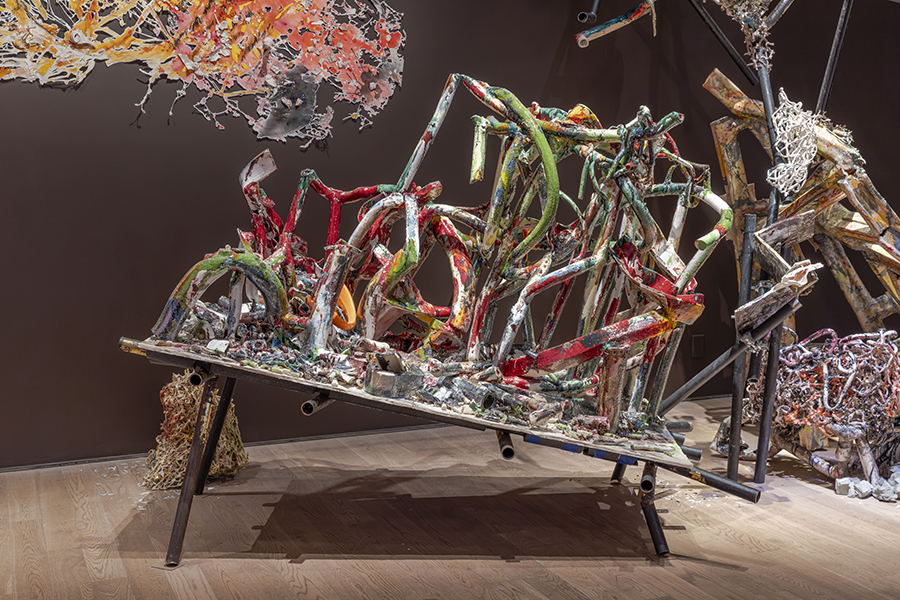

Linda Sormin Lecture
Join us for a lecture by artist Linda Sormin followed by an audience Q&A.
Linda Sormin’s ceramic and mixed media sculptures and site-responsive installations embody vulnerable and fragmented parts of human experience. Since the early 2000’s, Sormin has established a distinct visual and material language, using raw clay, fired ceramics, found objects, and interactive methods. She integrates writing, video, sound, and hand-cut paintings with clay, metal, and wood. Sormin’s research and writing cast light on how her work has always been influenced—though at times unwittingly—by cultural practices in her family histories rooted in Thailand, China, and Indonesia.
Recent exhibitions include large scale installations in Ceramics in the Expanded Field: Sculpture, Performance and the Possibilities of Clay at MASS MoCA, North Adams, Massachusetts (2021–23) and Hokusai: Inspiration and Influence at the Museum of Fine Arts, Boston (2023). Linda Sormin: Uncertain Ground, her first solo museum exhibition, is currently on view at the Gardiner Museum in Toronto through April 12. Her work is included in private and public collections including the permanent collections of the Museum of Fine Arts, Boston; Renwick Gallery of the Smithsonian American Art Museum, Washington, DC; Gardiner Museum, Toronto; CLAY Museum of Ceramic Art, Middelfart, Denmark; Everson Museum of Art, Syracuse; and Victoria and Albert Museum, London. Sormin lives and works in New York City and is a professor of Studio Art at New York University.
This event will be live captioned by Communication Access Realtime Translation (CART) services. The auditorium is wheelchair accessible and hearing assisted devices are available. For additional access requests, visit saic.edu/access.
Image Credit: Linda Sormin, Uncertain Ground, 2025, ceramic and mixed media installation, dimensions variable, Gardiner Museum, Toronto. Photo by Toni Hafkenscheid